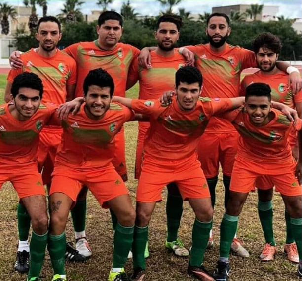
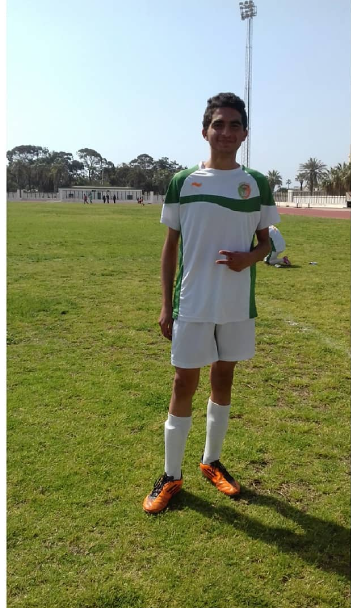
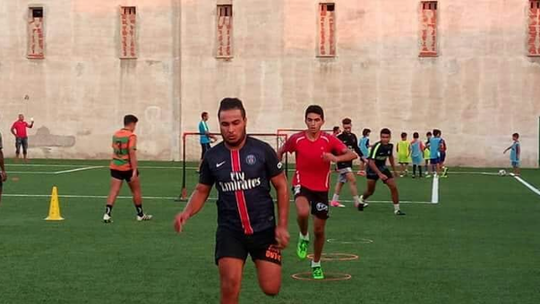

De 2016 à 2020, j'ai eu le privilège de porter fièrement le maillot de l'équipe de football Stade Nabeulien
en tant que défenseur.
Durant ces années, j'ai contribué de manière significative à la solidité défensive de l'équipe,mettant en avant
mes compétences techniques et tactiques sur le térrain.
Ces années ont été marquées par une passion inébranlable pour le jeu et un dévouement constant envers l'excellence
sportive.
|  |  |  |